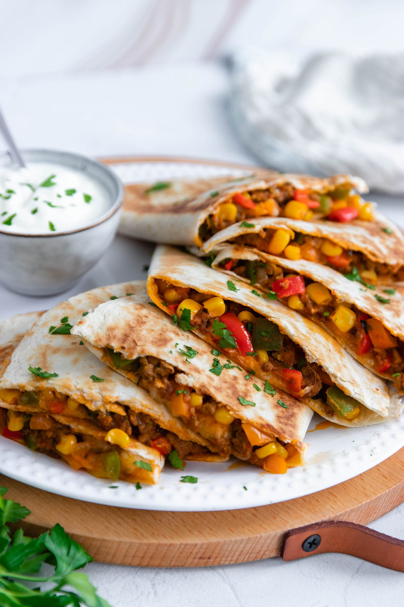

Quesadilla
 4 tortillas
4 tortillas 30 minutes
30 minutes Veggie
Veggie Spicy
Spicy Salty
Salty

Preheat the oven to 180°C. Line 2 large baking sheets with parchment paper.
1 canblack beans1 cancorn1bell pepper, diced80 mLcilantro, chopped80 mLred onion, minced
In a large mixing bowl, add black beans, corn, pepper, cilantro, red onion, some cumin and salt. Stir well to combine.
4tortillas2 packsgrated cheddar
Build each quesadilla: on a half of tortilla sprinkle some cheddar, add the veggie mixture and sprinkle more cheese. Fold the other half of tortilla on top pressing on it somewhat gently-hard making a half moon shape. Repeat for all tortillas. Add leftover cheese on top of the quesadillas.
- Salsa, sour cream, guacamole.
Bake for 20 minutes. Remove from the oven, let rest for 3-5 minutes and cut each quesadilla in half using serrated knife. Serve with salsa and sour cream